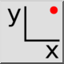

Coordonați
Bară de instrumente / Pictogramă:


Meniu: Ancorare > Coordonați
Scurtătură: S, X
Comenzi: snapcoordinate | sx
Bară de instrumente / Pictogramă:


Definește un punct prin introducerea unei coordonate carteziene absolute sau relative.